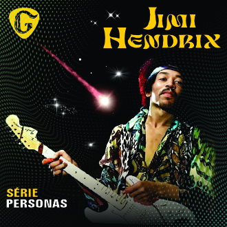
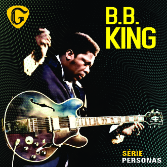
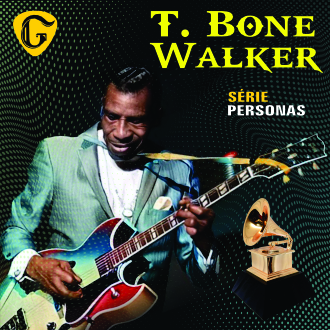
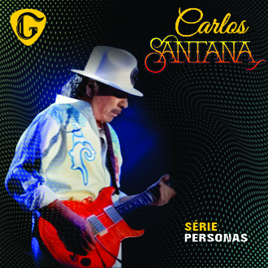
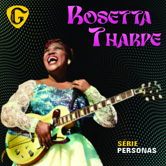

-
O Rei da Guitarra Minuto Hendrix 
Jimi Hendrix; o rei da guitarra, uma lenda no universo musical com uma meteórica e fascinante trajetória. Hendrix, era americano e foi cantor, compositor e um dos melhores e mais influentes guitarristas da história do Rock in Roll dos anos 60. Dono de um estilo singular e polêmico, levou e leva até hoje ao delírio os amantes do Rock.
-
O Rei do Reggae Minuto Bob Bob Marley, O Mediador da Paz. Cantor e compositor jamaicano de reggae, Bob foi Apaziguador e Revolucionário, e sempre viveu em questionamentos onde através do reggae foi um grande mediador da paz. Suas composições são reflexivas e suas atitudes causaram inquietude para aqueles que não queriam a Paz e Igualdade. Além de seu fantástico legado musical suas Frases também eram impactantes como por exemplo: "Se Deus criou as pessoas para amar e as coisas para cuidar por que amamos as coisas e usamos as pessoas?" Bob Marley sempre ficará na história da Jamaica, do Reggae e da Humanidade.
-
O Rei do Blues Minuto B.B. King B.B. King, o lendário guitarrista de blues. Essa lenda do blues foi considerado o 6° melhor guitarrista de todos os tempos pela revista norte-americana Rolling Stone. Conhecido por sua genialidade musical e habilidade incomparável, era incansável e fazia cerca de 100 apresentações por ano com mais de 80 anos. A vida de B.B. King é uma verdadeira inspiração para gerações de músicos em todo o mundo até hoje .
-
O Pai do Blues Elétrico Minuto T. Bone T-Bone Walker, o precursor do blues elétrico. T-Bone, foi um guitarrista de blues, cantor e compositor americano, tido como o primeiro músico de blues a usar uma guitarra acústica amplificada. Conhecido como inspirador de grandes estrelas, a vida de T-Boner Walker foi inspiração para B.B King e várias gerações de músicos em todo o mundo.
-
O Pai do Rock Latino Minuto Santana Carlos Santana, pai do rock latino. Mais um ícone do universo da guitarra, Santana como também é conhecido; é um multi-instrumentista, cantor, compositor e um guitarrista fora da curva por assim dizer, atuando até hoje com shows sensacionais. Suas composições permeam do dançante ao romântico latino de forma elegante e cativante. Sua música é atemporal e quem ainda não conhece o seu trabalho vale a pena conhecer essa lenda da guitarra e o rock latino .
-
A Mãe do Rock Minuto Sister Rosetta Roseta Tharpe; a Mãe do Rock “n” Roll; guitarrista, cantora, compositora; e apesar de nem sempre ter sido lembrada como a “inventora“ desse gênero, Rosetta, foi pioneira do nosso Rock "n Roll, sendo referência de lendários guitarristas como; Little Richard, Chuck Berry, Carl Perkins e Elvis Presley. Podemos dizer que Rosetta Tharpe deixou o seu nome eternizado entre todos os amantes da música e do Rock “n” Roll .